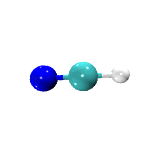
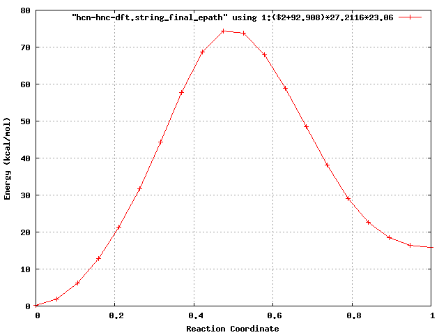

Nudged Elastic Band (NEB) method¶
The NEB module is an implementation of the nudged elastic band (NEB) method of Jonsson et al., and it is one of two drivers in NWChem that can be used to perform minimum energy path optimizations. NEB can be used at all levels of theory, including SCF, HF, DFT, PSPW, BAND, MP2, RIMP2, CCSD, TCE.
Input to the NEB modules is contained with the NEB block
NEB
...
END
To run a NEB calculation the following the following task directives is used
TASK <theory> NEB
TASK <theory> NEB ignore
where <theory> is SCF, HF, DFT, PSPW, BAND, MP2, CCSD, TCE, etc.. The
Task directive with the ignore option is recommended, otherwise NWChem
will crash if the path is not optimized in the allowed maximum number of
iterations.
Optional input for this module is specified within the compound directive,
NEB
NBEADS <integer nbeads default 5>
KBEADS <float kbeads default 0.1>
MAXITER <integer maxiter default 5>
STEPSIZE <integer stepsize default 1.0>
NHIST <integer nhist default 5>
ALGORITHM <integer algorithm default 0>
[loose | default | tight]
GMAX <float gmax default 0.00045>
GRMS <float grms default 0.00030>
XMAX <float xmax default 0.00018>
XMRS <float xmrs default 0.00012>
[IMPOSE]
[HASMIDDLE]
[XYZ_PATH <string xyzfilename>]
[RESET]
[PRINT_SHIFT <integer print_shift default 0>]
END
The following list describes the input for the NEB block
- nbeads - number of beads (or images) used to represent the path
- kbeads - value for the NEB spring constant
- maxiter - maximum number of NEB path optimizations to be performed
- stepsize - value for the stepsize used in the optimization. Typically less than 1.
- nhist - number of histories to use for quasi-Newton optimization (algorithm =0)
- LOOSE|DEFAULT|TIGHT - options specifying thresholds for convergence
- gmax - value for the maximum gradient used to determine convergence
- grms - value for the root mean square gradient used to determine convergence
- xmax - value for the maximum cartesian step used to determine convergence
- xrmx - value for the root mean square cartesian step used to determine convergence
- algorithm - 0: quasi-Newton Fixed Point optimization, 1: dampled Verlet optimization, 2: refining conjugate gradient optimization
- IMPOSE - if specified causes the initial geometries used to specify the path to be aligned with one another
- HASMIDDLE - if specified causes the initial path to use the the “midgeom” geometry to be used as the midpoint, i.e. the initial path is defined as a linear morphing from “geometry” –> “midgeom” –> “endgeom”
- XYZ_PATH - if specified the initial path is defined from the sequence of geometries contained in xyzfilename
- RESET - if specified causes the NEB optimization and path to be started from scratch
- print_shift - setting the
PRINT_SHIFTdirective causes the path energies and geometries to be outputed every<print_shift>steps. The current path energies are appended to the filejobname.neb_epathand the current geometries are appended to the filejobname.nebpath_"current iteration".xyz.
Setting up initial path¶
There are three different ways to define the initial path for NEB optimization.
- Linear interpolation between two geometries
The geometries in the path are defined by
where the starting geometry \(\vec{R}^1_{xyz}\) is entered in the
geometry block labeled geometry, e.g.
geometry nocenter noautosym noautoz
O 0.00000000 -0.02293938 0.00000000
H 0.00000000 0.55046969 0.75406534
H 0.00000000 0.55046969 -0.75406534
end
and the last geometry in the path \(\vec{R}^{nbeads}_{xyz}\) is
entered in the geometry block label endgeom, e.g.
geometry endgeom nocenter noautosym noautoz
O 0.00000000 0.02293938 0.00000000
H 0.00000000 -0.55046969 0.75406534
H 0.00000000 -0.55046969 -0.75406534
end
- Linear interpolation between three geometries
The geometries for this path are defined by
and
where the starting \(\vec{R}^1_{xyz}\) , middle \(\vec{R}_{xyz}^{nbeads/2}\) and last \(\vec{R}^{nbeads}_{xyz}\)
geometries are entered in the geometry blocks geometry, midgeom and
endgeom respectively, e.g.
geometry nocenter noautosym noautoz
O 0.00000000 -0.02293938 0.00000000
H 0.00000000 0.55046969 0.75406534
H 0.00000000 0.55046969 -0.75406534
end
geometry midgeom nocenter noautosym noautoz
O 0.00000000 0.00000000 0.00000000
H 0.00000000 0.00000000 1.00000000
H 0.00000000 0.00000000 -1.00000000
end
geometry endgeom nocenter noautosym noautoz
O 0.00000000 0.02293938 0.00000000
H 0.00000000 -0.55046969 0.75406534
H 0.00000000 -0.55046969 -0.75406534
end
- Using
xyz_pathto explicitly input a path of geometries
The xyz_path option can also be used to define the initial path.
...
NEB
...
XYZ_PATH path.xyz
END
...
where path.xyz contains a list of geometries in xyz format, e.g.
--------------- path.xyz ------------------
3
energy= -17.107207699285738
O 0.000000 -0.022939 0.000000
H 0.000000 0.550469 0.754065
H 0.000000 0.550469 -0.754065
3
energy= -17.094903833074170
O -0.000003 -0.110080 -0.000000
H -0.000000 0.273180 0.847029
H -0.000000 0.273180 -0.847029
3
energy= -17.063823686395292
O -0.000000 -0.000080 -0.000000
H 0.000000 -0.000002 0.941236
H 0.000000 -0.000002 -0.941236
3
energy= -17.094944036147005
O -0.000000 0.110472 -0.000000
H -0.000000 -0.273172 0.846957
H -0.000000 -0.273172 -0.846957
3
energy= -17.107208157343706
O 0.000000 0.022939 0.000000
H 0.000000 -0.550469 0.754065
H 0.000000 -0.550469 -0.754065
--------------- path.xyz ------------------
Convergence criteria¶
The defaults may be used, or the directives LOOSE, DEFAULT, or TIGHT specified to use standard sets of values, or the individual criteria adjusted. All criteria are in atomic units. GMAX and GRMS control the maximum and root mean square gradient in the coordinates. XMAX and XRMS control the maximum and root mean square of the Cartesian step.
| LOOSE | DEFAULT | TIGHT | |
|---|---|---|---|
| GMAX | 0.0045d0 | 0.00045 | 0.000015 |
| GRMS | 0.0030d0 | 0.00030 | 0.00001 |
| XMAX | 0.0054d0 | 0.00180 | 0.00006 |
| XRMS | 0.0036d0 | 0.00120 | 0.00004 |
NEB Tutorial 1: H2O Inversion¶
(input:h2o-neb.nw, output:h2o-neb.nwout, datafiles: h2o-neb.neb_epath.dat h2o-neb.neb_final_epath.dat )
(xyzfiles: h2o-neb.nebpath_000001.xyz h2o-neb.nebpath_000005.xyz h2o-neb.nebpath_000010.xyz h2o-neb.nebpath_000020.xyz h2o-neb.nebpath_final.xyz )

Title "H2O inversion calculation"
echo
start h2o-neb
geometry nocenter noautosym noautoz
O 0.00000000 -0.02293938 0.00000000
H 0.00000000 0.55046969 0.75406534
H 0.00000000 0.55046969 -0.75406534
end
geometry endgeom nocenter noautosym noautoz
O 0.00000000 0.02293938 0.00000000
H 0.00000000 -0.55046969 0.75406534
H 0.00000000 -0.55046969 -0.75406534
end
#### Gaussian DFT ####
basis
* library 3-21G
end
dft
xc b3lyp
maxiter 5001
cgmin
end
neb
nbeads 10
kbeads 1.0
maxiter 10
stepsize 0.10
print_shift 1
end
task dft neb ignore
neb
# increase the number of images
nbeads 20
kbeads 1.0
stepsize 1.0
maxiter 30
loose
end
task dft neb ignore
After each optimization step the path energies are outputed as follows
neb: Path Energy # 9
neb: 1 -75.970000166349976
neb: 2 -75.973958450556779
neb: 3 -75.973964391052448
neb: 4 -75.973965560274110
neb: 5 -75.973961077512683
neb: 6 -75.973087554095144
neb: 7 -75.965847261117744
neb: 8 -75.950292780255126
neb: 9 -75.932932759963109
neb: 10 -75.921912278179292
neb: 11 -75.921834552460439
neb: 12 -75.932680002200939
neb: 13 -75.949868818688529
neb: 14 -75.965372754426866
neb: 15 -75.972788885848303
neb: 16 -75.973958649400714
neb: 17 -75.973965255113598
neb: 18 -75.973964962774133
neb: 19 -75.973959526041568
neb: 20 -75.970000163960066
Another way to keep track of the optimization process is to run the following grep command on the output file.
[WE24397:NWChem/NEB/Example2] bylaska% grep @ h2o-neb.nwout
@neb
@neb NEB Method
@neb algorithm = 0
@neb maxiter = 10
@neb nbeads = 10
@neb nhist = 5
@neb natoms = 3
@neb stepsize = 0.100E+01
@neb trust = 0.100E+00
@neb kbeads = 0.100E+00
@neb Gmax tolerance = 0.450E-03
@neb Grms tolerance = 0.300E-03
@neb Xmax tolerance = 0.180E-03
@neb Xrms tolerance = 0.120E-03
@neb
@neb Step Intrinsic E Mid-Point E Minimum E Maximum E Gmax Grms Xrms Xmax Walltime
@neb ---- -------------- -------------- -------------- -------------- -------- -------- -------- -------- --------
@neb 1 -75.951572 -75.921109 -75.970632 -75.921109 0.55875 0.01606 0.14221 1.54029 454.9
@neb 2 -75.953755 -75.923180 -75.972590 -75.923177 0.38930 0.01116 0.01588 0.45644 624.4
@neb 3 -75.956726 -75.924391 -75.972861 -75.924387 0.25587 0.00961 0.03673 0.83118 805.2
@neb 4 -75.957861 -75.924279 -75.973059 -75.924275 0.23572 0.00894 0.01793 0.24399 971.8
@neb 5 -75.959613 -75.925045 -75.973869 -75.925036 0.10257 0.00464 0.03197 0.20350 1152.8
@neb 6 -75.959964 -75.925503 -75.973957 -75.925486 0.04762 0.00196 0.00905 0.10433 1316.4
@neb 7 -75.960068 -75.925822 -75.973956 -75.925791 0.03897 0.00141 0.00308 0.04432 1519.9
@neb 8 -75.960091 -75.925914 -75.973959 -75.925877 0.03707 0.00127 0.00070 0.01691 2055.8
@neb 9 -75.960129 -75.926078 -75.973962 -75.926028 0.03353 0.00108 0.00127 0.03707 2297.2
@neb 10 -75.960142 -75.926142 -75.973963 -75.926085 0.03199 0.00101 0.00054 0.00420 2756.6
@neb NEB calculation not converged
@neb
@neb NEB Method
@neb algorithm = 0
@neb maxiter = 30
@neb nbeads = 20
@neb nhist = 5
@neb natoms = 3
@neb stepsize = 0.100E+01
@neb trust = 0.100E+00
@neb kbeads = 0.100E+01
@neb Gmax tolerance = 0.450E-02
@neb Grms tolerance = 0.300E-02
@neb Xmax tolerance = 0.540E-02
@neb Xrms tolerance = 0.360E-02
@neb
@neb Step Intrinsic E Mid-Point E Minimum E Maximum E Gmax Grms Xrms Xmax Walltime
@neb ---- -------------- -------------- -------------- -------------- -------- -------- -------- -------- --------
@neb 1 -75.960225 -75.921704 -75.973965 -75.921669 0.24799 0.00398 0.00272 0.08741 3966.5
@neb 2 -75.960339 -75.921782 -75.973965 -75.921745 0.24794 0.00328 0.00199 0.12148 5023.2
@neb 3 -75.960424 -75.921742 -75.973965 -75.921701 0.19390 0.00286 0.00164 0.08342 5741.4
@neb 4 -75.960494 -75.921849 -75.973965 -75.921804 0.19681 0.00266 0.00143 0.09030 6079.7
@neb 5 -75.960646 -75.921874 -75.973965 -75.921820 0.17459 0.00240 0.00241 0.22047 6751.5
@neb 6 -75.960674 -75.921856 -75.973965 -75.921797 0.14246 0.00165 0.00060 0.00256 7572.3
@neb 7 -75.960724 -75.921884 -75.973966 -75.921817 0.13004 0.00153 0.00082 0.05401 7893.3
@neb 8 -75.960747 -75.921892 -75.973966 -75.921822 0.12809 0.00149 0.00038 0.00237 8631.2
@neb 9 -75.960792 -75.921912 -75.973966 -75.921835 0.12267 0.00142 0.00075 0.05081 9222.0
@neb 10 -75.960813 -75.921923 -75.973966 -75.921841 0.11902 0.00138 0.00035 0.00212 10163.2
@neb 11 -75.960834 -75.921934 -75.973966 -75.921846 0.11569 0.00135 0.00035 0.00203 10478.3
@neb 12 -75.961060 -75.922060 -75.973966 -75.921889 0.07709 0.00104 0.00365 0.30944 10863.8
@neb 13 -75.961255 -75.922186 -75.973966 -75.921919 0.04600 0.00087 0.00309 0.19999 11357.0
@neb 14 -75.961405 -75.922286 -75.973966 -75.921927 0.03549 0.00079 0.00244 0.03857 11860.0
@neb NEB calculation converged
Zero Temperature String Method¶
The STRING module is an implementation of the zero temperature string method of vanden Eijden et al., and it is one of two drivers in NWChem that can be used to perform minimum energy path optimizations. STRING can be used at all levels of theory, including SCF, HF, DFT, PSPW, BAND, MP2, RIMP2, CCSD, TCE.
Input to the STRING module is contained with the STRING block
STRING
...
END
To run a STRING calculation the following the following task directives is used
TASK <theory> STRING
TASK <theory> STRING ignore
where <theory> is SCF, HF, DFT, PSPW, BAND, MP2, CCSD, TCE, etc.. The
Task directive with the ignore option is recommended, otherwise NWChem
will crash if the path is not optimized in the allowed maximum number of
iterations.
Optional input for this module is specified within the compound directive,
STRING
NBEADS <integer nbeads default 5>
MAXITER <integer maxiter default 5>
STEPSIZE <integer stepsize default 1.0>
NHIST <integer nhist default 5>
INTERPOL <integer algorithm default 1>
FREEZE1 <logical freeze1 default .false.>
FREEZEN <logical freezen default .false.>
TOL <float tol default 0.00045>
[IMPOSE]
[HASMIDDLE]
[XYZ_PATH <string xyzfilename>]
[RESET]
PRINT_SHIFT <integer print_shift default 0>
END
The following list describes the input for the STRING block
- nbeads - number of beads (or images) used to represent the path
- maxiter - maximum number of NEB path optimizations to be performed
- stepsize - value for the stepsize used in the optimization. Typically less than 1.
- nhist - number of histories to use for quasi-Newton optimization (algorithm =0)
- tol - value for the maximum gradient used to determine convergence
- freeze1 -
.true.: first bead of simulation frozen,.false.:first bead of simulation not frozen. - freezeN -
.true.:last bead of simulation frozen,.false.:last bead of simulation not frozen - interpol - 1: linear, 2: spline, 3: Akima spline
- IMPOSE - if specified causes the initial geometries used to specify the path to be aligned with one another
- HASMIDDLE - if specified causes the initial path to use the the “midgeom” geometry to be used as the midpoint, i.e. the initial path is defined as a linear morphing from “geometry” –> “midgeom” –> “endgeom”
- XYZ_PATH - if specified the initial path is defined from the sequence of geometries contained in xyzfilename
- RESET - if specified causes the NEB optimization and path to be started from scratch
- print_shift - setting the PRINT_SHIFT directive causes the path
energies and geometries to be outputed every
<print_shift>steps. The current path energies are appended to the filejobname.neb_epathand the current geometries are appended to the filejobname.nebpath _"current iteration".xyz
Setting up the initial path¶
There are three different ways to define the initial path for NEB optimization.
- Linear interpolation between two geometries
The geometries in the path are defined by
where the starting geometry \(\vec{R}^1_{xyz}\) is entered in the
geometry block labeled geometry, e.g.
geometry nocenter noautosym noautoz
O 0.00000000 -0.02293938 0.00000000
H 0.00000000 0.55046969 0.75406534
H 0.00000000 0.55046969 -0.75406534
end
and the last geometry in the path \(\vec{R}^{nbeads}_{xyz}\) is
entered in the geometry block label endgeom, e.g.
geometry endgeom nocenter noautosym noautoz
O 0.00000000 0.02293938 0.00000000
H 0.00000000 -0.55046969 0.75406534
H 0.00000000 -0.55046969 -0.75406534
end
- Linear interpolation between three geometries
The geometries for this path are defined by
and
where the starting \(\vec{R}^{1}_{xyz}\) , middle
\(\vec{R}^{nbeads/2}_{xyz}\) and last \(\vec{R}^{nbeads}_{xyz}\)”
geometries are entered in the geometry blocks geometry, midgeom and
endgeom respectively, e.g.
geometry nocenter noautosym noautoz
O 0.00000000 -0.02293938 0.00000000
H 0.00000000 0.55046969 0.75406534
H 0.00000000 0.55046969 -0.75406534
end
geometry midgeom nocenter noautosym noautoz
O 0.00000000 0.00000000 0.00000000
H 0.00000000 0.00000000 1.00000000
H 0.00000000 0.00000000 -1.00000000
end
geometry endgeom nocenter noautosym noautoz
O 0.00000000 0.02293938 0.00000000
H 0.00000000 -0.55046969 0.75406534
H 0.00000000 -0.55046969 -0.75406534
end
- Using
xyz_pathto explicitly input a path of geometries
The xyz_path option can also be used to define the initial path, e.g.
...
STRING
...
XYZ_PATH path.xyz
END
...
String Tutorial 1:HCN –> HNC path optimization¶
(input:HCN-string1.nw, output:HCN-string1.nwout, datafiles: HCN-string1.string_epath.dat HCN-string1.string_final_epath.dat )
(xyzfiles: HCN-string1.stringpath_000001.xyz HCN-string1.stringpath_000005.xyz HCN-string1.stringpath_000010.xyz HCN-string1.stringpath_000020.xyz HCN-string1.stringpath_000030.xyz HCN-string1.stringpath_final.xyz )


In this example, the path energy for the reaction HCN –> HNC is calculated.
#
# The initial path has the Carbon moving through the Nitrogen.
# So for this simulation to work that atom avoidance code needs to work.
# Because the initial path is so stiff the wavefunction optimizer needs to requires
# lots of iterations during the early stages of the path optimization.
#
#
Title "HCN --> HNC Zero-Temperature String Simulation"
echo
start hcn-hnc-dft
geometry noautoz noautosym
C 0.00000000 0.00000000 -0.49484657
N 0.00000000 0.00000000 0.64616359
H 0.00000000 0.00000000 -1.56151539
end
geometry endgeom noautoz noautosym
C 0.00000000 0.00000000 0.73225318
N 0.00000000 0.00000000 -0.42552059
H 0.00000000 0.00000000 -1.42351006
end
#### Gaussian DFT ####
basis
* library 3-21G
end
dft
xc b3lyp
maxiter 501
end
string
nhist 10
nbeads 10
maxiter 10
stepsize 0.10
print_shift 1
# don't allow the end points of the path to move
freeze1 .true.
freezeN .true.
end
task dft string ignore
string
# increase the number of images
nbeads 20
maxiter 20
# allow the end points of the path to move
freeze1 .false.
freezeN .false.
end
task dft string ignore
After each optimization step the path energies are outputed as follows
string: Path Energy # 2
string: 1 -92.906682492969779
string: 2 -92.743446565848473
string: 3 -92.751945829987775
string: 4 -92.756507971834026
string: 5 -92.726984154346979
string: 6 -92.701651474021503
string: 7 -92.672613497521183
string: 8 -92.825096796032099
string: 9 -92.716422030970662
string: 10 -92.881713271394148
Another way to keep track of the optimization process is to run the following grep command on the output file.
[WE24397:NWChem/NEB/Example2] bylaska% grep @ HCN-dft.out
@zts
@zts String method.
@zts Temperature = 0.00000
@zts Covergence Tolerance = 0.00010
@zts Step Size = 0.10000
@zts Maximum Time Steps = 10
@zts Number of replicas = 10
@zts Number of histories = 10
@zts String Interpolator = 1
@zts First Replica = frozen
@zts Last Replica = frozen
@zts
@zts Step xrms xmax E start E middle E end E max E average
@zts 1 0.460700 2.602234 -92.9066825 -83.4767173 -92.8817133 -83.4767173 -91.6169775
@zts 2 0.862226 5.405612 -92.9066825 -92.3028437 -92.8817133 -92.3028437 -92.6631831
@zts 3 0.105285 0.530157 -92.9066825 -92.3289676 -92.8817133 -92.3289676 -92.6702949
@zts 4 0.134687 0.740991 -92.9066825 -92.3512584 -92.8817133 -92.3512584 -92.6821949
@zts 5 0.117113 0.916210 -92.9066825 -92.3767826 -92.8817133 -92.3767826 -92.6899234
@zts 6 0.124464 0.844439 -92.9066825 -92.4195957 -92.8817133 -92.4195957 -92.7045117
@zts 7 0.092105 0.731434 -92.9066825 -92.4510785 -92.8817133 -92.4510785 -92.7156403
@zts 8 0.049227 0.330651 -92.9066825 -92.4690983 -92.8817133 -92.4690983 -92.7288274
@zts 9 0.032819 0.177356 -92.9066825 -92.4827444 -92.8817133 -92.4827444 -92.7344806
@zts 10 0.076249 0.444246 -92.9066825 -92.4930430 -92.8817133 -92.4930430 -92.7381477
@zts The string calculation failed to converge
@zts Bead number 1 Potential Energy = -92.906682487840
@zts Bead number 2 Potential Energy = -92.850640135623
@zts Bead number 3 Potential Energy = -92.819370566454
@zts Bead number 4 Potential Energy = -92.680821335407
@zts Bead number 5 Potential Energy = -92.505231918657
@zts Bead number 6 Potential Energy = -92.493042984646
@zts Bead number 7 Potential Energy = -92.637367419044
@zts Bead number 8 Potential Energy = -92.775376312982
@zts Bead number 9 Potential Energy = -92.831230727986
@zts Bead number 10 Potential Energy = -92.881713271394
@zts
@zts String method.
@zts Temperature = 0.00000
@zts Covergence Tolerance = 0.00010
@zts Step Size = 0.10000
@zts Maximum Time Steps = 20
@zts Number of replicas = 20
@zts Number of histories = 10
@zts String Interpolator = 1
@zts First Replica = moves
@zts Last Replica = moves
@zts
@zts Step xrms xmax E start E middle E end E max E average
@zts 1 1.039809 5.039486 -92.9071472 -92.4998400 -92.8820628 -92.4998400 -92.7500136
@zts 2 0.192562 0.999019 -92.9073958 -92.5259828 -92.8821500 -92.5259828 -92.7624061
@zts 3 0.244943 1.236459 -92.9075306 -92.5735140 -92.8821223 -92.5735140 -92.7816692
@zts 4 0.207031 1.093667 -92.9075888 -92.6229190 -92.8821177 -92.6154678 -92.7979112
@zts 5 0.056648 0.293829 -92.9075975 -92.6672565 -92.8821033 -92.6507897 -92.8101666
@zts 6 0.078950 0.555245 -92.9076044 -92.7245122 -92.8822536 -92.7014407 -92.8241914
@zts 7 0.065564 0.521110 -92.9076101 -92.7539982 -92.8822915 -92.7376310 -92.8326007
@zts 8 0.050188 0.319477 -92.9076113 -92.7695725 -92.8824219 -92.7612604 -92.8378464
@zts 9 0.055301 0.322130 -92.9076168 -92.7754581 -92.8825732 -92.7740099 -92.8408900
@zts 10 0.038769 0.195102 -92.9076177 -92.7775695 -92.8826652 -92.7775695 -92.8425440
@zts 11 0.064900 0.273480 -92.9076215 -92.7800330 -92.8827175 -92.7800330 -92.8443574
@zts 12 0.062593 0.266337 -92.9076224 -92.7823972 -92.8826993 -92.7823972 -92.8458976
@zts 13 0.205437 0.948190 -92.9076243 -92.7842034 -92.8826408 -92.7842034 -92.8469810
@zts 14 0.015025 0.068924 -92.9076247 -92.7844362 -92.8826536 -92.7844362 -92.8472227
@zts 15 0.129208 0.602636 -92.9076254 -92.7849856 -92.8826676 -92.7849856 -92.8477169
@zts 16 0.013479 0.056561 -92.9076260 -92.7855201 -92.8826783 -92.7855201 -92.8481626
@zts 17 0.472858 2.220715 -92.9076271 -92.7878088 -92.8826913 -92.7878088 -92.8497919
@zts 18 0.162617 0.766201 -92.9076273 -92.7879912 -92.8826934 -92.7879912 -92.8499197
@zts 19 0.013204 0.060562 -92.9076276 -92.7885097 -92.8826994 -92.7885097 -92.8502675
@zts 20 0.718205 3.423813 -92.9076278 -92.7905066 -92.8827009 -92.7895258 -92.8514863
@zts The string calculation failed to converge
@zts Bead number 1 Potential Energy = -92.907627751439
@zts Bead number 2 Potential Energy = -92.905047596626
@zts Bead number 3 Potential Energy = -92.897944354806
@zts Bead number 4 Potential Energy = -92.887494117302
@zts Bead number 5 Potential Energy = -92.874059841858
@zts Bead number 6 Potential Energy = -92.857382758537
@zts Bead number 7 Potential Energy = -92.837207959079
@zts Bead number 8 Potential Energy = -92.815902497386
@zts Bead number 9 Potential Energy = -92.798474907121
@zts Bead number 10 Potential Energy = -92.789525765222
@zts Bead number 11 Potential Energy = -92.790506632257
@zts Bead number 12 Potential Energy = -92.799861168980
@zts Bead number 13 Potential Energy = -92.814252430183
@zts Bead number 14 Potential Energy = -92.830704548760
@zts Bead number 15 Potential Energy = -92.847248091296
@zts Bead number 16 Potential Energy = -92.861557132126
@zts Bead number 17 Potential Energy = -92.871838446832
@zts Bead number 18 Potential Energy = -92.878543965696
@zts Bead number 19 Potential Energy = -92.881844751735
@zts Bead number 20 Potential Energy = -92.882700859222
A plotting program (e.g. gnuplot, xmgrace) can be used to look at final path as well as the the convergence of the path i.e.,
[WE24397:NEB/Example2/perm] bylaska% gnuplot
G N U P L O T
Version 4.6 patchlevel 0 last modified 2012-03-04
Build System: Darwin x86_64
Copyright (C) 1986-1993, 1998, 2004, 2007-2012
Thomas Williams, Colin Kelley and many others
gnuplot home: <http://www.gnuplot.info>
faq, bugs, etc: type "help FAQ"
immediate help: type "help" (plot window: hit 'h')
Terminal type set to 'aqua'
gnuplot> set xlabel "Reaction Coordinate"
gnuplot> set ylabel "Energy (kcal/mol)"
gnuplot> set yrange [0:100]
gnuplot> set grid
gnuplot> set style data linespoints
gnuplot> plot "hcn-hnc-dft.string_epath" using 1:($2+92.908)*27.2116*23.06,"hcn-hnc-dft.string_final_epath" using 1:($2+92.908)*27.2116*23.06
gnuplot>
{kind=link}
String Tutorial 2:¶
Title "2SiO4H4 --> H3O3Si-O-SiO3H3 + H2O"
echo
start sio4h4-dimer
geometry noautoz noautosym
Si -3.90592 -0.11789 0.03791
O -2.32450 -0.24327 -0.05259
O -4.45956 -1.13247 1.13159
O -4.53584 -0.45118 -1.38472
O -4.28179 1.37363 0.44838
Si 1.27960 0.06912 0.14555
O 2.85122 0.23514 0.32761
O 0.54278 0.38513 1.52092
O 0.94484 -1.42248 -0.29913
O 0.75605 1.07390 -0.97272
H -1.66762 -0.74425 -0.29362
H -4.05734 2.06481 0.90983
H -4.30983 -1.85807 1.57116
H -4.43621 -0.88060 -2.12508
H 3.59374 -0.16315 0.50572
H 0.36896 0.10990 2.31839
H 0.53993 -2.15495 -0.09488
H 0.43207 1.85525 -1.13531
end
geometry endgeom noautoz noautosym
Si -3.07373 0.18232 -0.24945
O -1.50797 0.23823 -0.53062
O -3.36758 -0.93058 0.85023
O -3.83958 -0.20093 -1.59101
O -3.57993 1.59735 0.27471
Si -0.05186 0.25441 0.11277
O 0.94679 -0.58168 -0.80206
O -0.10091 -0.40972 1.55838
O 1.41035 -3.75872 1.22931
O 0.47135 1.75206 0.24209
H 1.03624 -4.62405 0.92620
H -3.81554 2.06192 0.96069
H -3.97094 -1.38510 1.26383
H -4.39754 -0.73964 -1.96563
H 1.45990 -0.57144 -1.49361
H -0.44444 -0.37536 2.34765
H 2.15751 -4.00850 1.82933
H 0.77180 2.44229 -0.17616
end
nwpw
simulation_cell
SC 18.0
end
cutoff 30.0
lmbfgs
end
string
nhist 10
nbeads 10
maxiter 10
stepsize 0.10
print_shift 1
# don't allow the end points of the path to move
freeze1 .true.
freezeN .true.
end
task pspw string ignore
string
# increase the number of images
nbeads 20
maxiter 20
# allow the end points of the path to move
freeze1 .false.
freezeN .false.
end
task pspw string ignore